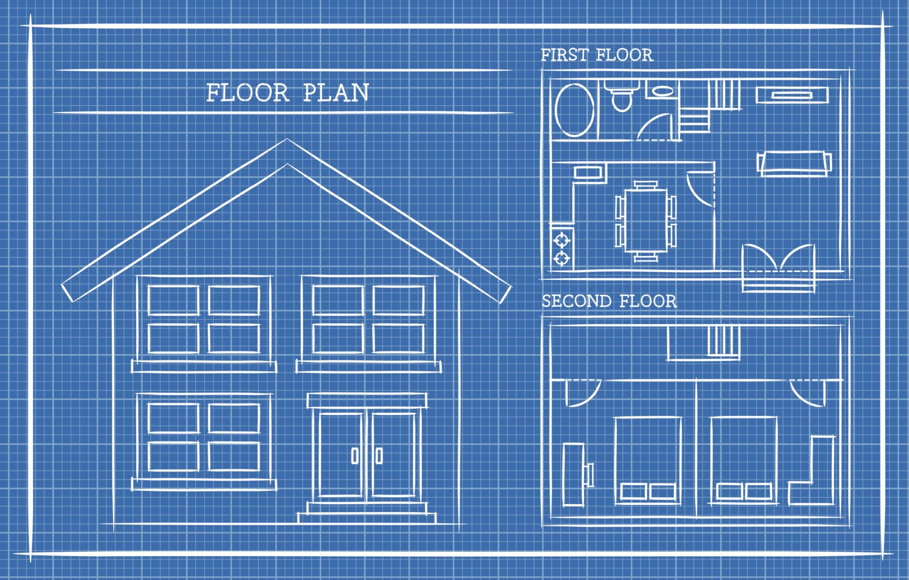

<!DOCTYPE html>
<html lang="en">
  <head>
    <meta charset="utf-8" />
    <meta name="viewport" content="width=device-width, initial-scale=1.0, maximum-scale=1.0, user-scalable=no" />

    <title></title>
    <link rel="stylesheet" href="dist/reveal.css" />
    <link rel="stylesheet" href="dist/theme/custom1.css" id="theme" />
    <link rel="stylesheet" href="plugin/highlight/atom-one-light.css" />
	<link rel="stylesheet" href="css/layout.css" />
	<link rel="stylesheet" href="plugin/customcontrols/style.css">
	<link rel="stylesheet" href="plugin/chalkboard/style.css">


    <script defer src="dist/fontawesome/all.min.js"></script>

	<script type="text/javascript">
		var forgetPop = true;
		function onPopState(event) {
			if(forgetPop){
				forgetPop = false;
			} else {
				parent.postMessage(event.target.location.href, "app://obsidian.md");
			}
        }
		window.onpopstate = onPopState;
		window.onmessage = event => {
			if(event.data == "reload"){
				window.document.location.reload();
			}
			forgetPop = true;
		}

		function fitElements(){
			const itemsToFit = document.getElementsByClassName('fitText');
			for (const item in itemsToFit) {
				if (Object.hasOwnProperty.call(itemsToFit, item)) {
					var element = itemsToFit[item];
					fitElement(element,1, 1000);
					element.classList.remove('fitText');
				}
			}
		}

		function fitElement(element, start, end){

			let size = (end + start) / 2;
			element.style.fontSize = `${size}px`;

			if(Math.abs(start - end) < 1){
				while(element.scrollHeight > element.offsetHeight){
					size--;
					element.style.fontSize = `${size}px`;
				}
				return;
			}

			if(element.scrollHeight > element.offsetHeight){
				fitElement(element, start, size);
			} else {
				fitElement(element, size, end);
			}		
		}


		document.onreadystatechange = () => {
			fitElements();
			if (document.readyState === 'complete') {
				if (window.location.href.indexOf("?export") != -1){
					parent.postMessage(event.target.location.href, "app://obsidian.md");
				}
				if (window.location.href.indexOf("print-pdf") != -1){
					let stateCheck = setInterval(() => {
						clearInterval(stateCheck);
						window.print();
					}, 250);
				}
			}
	};


        </script>
  </head>
  <body>
    <div class="reveal">
      <div class="slides"><section  data-markdown><script type="text/template"><!-- .slide: class="drop" -->
<div class="" style="position: absolute; left: 0px; top: 0px; height: 700px; width: 960px; min-height: 700px; display: flex; flex-direction: column; align-items: center; justify-content: center" absolute="true">

# Refresher - Methods and Objects
</div></script></section><section  data-markdown><script type="text/template"><!-- .slide: class="drop" -->
<div class="" style="position: absolute; left: 0px; top: 0px; height: 700px; width: 960px; min-height: 700px; display: flex; flex-direction: column; align-items: center; justify-content: center" absolute="true">

## Welcome to the CS2 Refresher!

Welcome back! This module is a quick review of two of the most important concepts from CS1: **methods** and **objects**. We'll move quickly, so ask questions if anything is unclear.

**What we'll cover:**

- A deep dive into methods: parameters, return values, and overloading.
    
- What an object is and why we use them.
    
- Classes as blueprints for objects.
    
- Constructors, fields, and instance methods.
</div></script></section><section  data-markdown><script type="text/template"><!-- .slide: class="drop" -->
<div class="" style="position: absolute; left: 0px; top: 0px; height: 700px; width: 960px; min-height: 700px; display: flex; flex-direction: column; align-items: center; justify-content: center" absolute="true">

## Reviewing Methods: The Basics

A **method** is a named block of code that performs a specific task. You can think of it as a sub-routine that makes your code organized and reusable.

**Why use methods?**

- **Reusability:** Write code once, use it many times.
    
- **Organization:** Break a big problem into smaller, manageable chunks.
    
- **Readability:** Give descriptive names to blocks of code (e.g., `calculateTaxes()`).
</div></script></section><section ><section data-markdown><script type="text/template"><!-- .slide: class="drop" -->
<div class="" style="position: absolute; left: 0px; top: 0px; height: 700px; width: 960px; min-height: 700px; display: flex; flex-direction: column; align-items: center; justify-content: center" absolute="true">

## Anatomy of a Method

Let's look at the parts of a method definition.

```
public static int addNumbers(int num1, int num2) {
    int sum = num1 + num2;
    return sum;
}
```

- **`public static`**: Access modifiers. We'll explore these more, but `static` means it belongs to the class, not an object.
    
- **`int`**: The **return type**. It specifies the type of data the method sends back. Use `void` if the method doesn't return anything.
</div></script></section><section data-markdown><script type="text/template"><!-- .slide: class="drop" -->
<div class="" style="position: absolute; left: 0px; top: 0px; height: 700px; width: 960px; min-height: 700px; display: flex; flex-direction: column; align-items: center; justify-content: center" absolute="true">

```
public static int addNumbers(int num1, int num2) {
    int sum = num1 + num2;
    return sum;
}
```
    
- **`addNumbers`**: The **method name**.
    
- **`(int num1, int num2)`**: The **parameters**. These are variables that act as placeholders for the data the method receives.
    
- **`{ ... }`**: The **method body**. All the code that the method executes goes in here.
    
- **`return sum;`**: The **`return` statement**. It sends the value back to the code that called the method.
</div></script></section></section><section  data-markdown><script type="text/template"><!-- .slide: class="drop" -->
<div class="" style="position: absolute; left: 0px; top: 0px; height: 700px; width: 960px; min-height: 700px; display: flex; flex-direction: column; align-items: center; justify-content: center" absolute="true">

## Parameters vs. Arguments

This is a key distinction.

- **Parameters**: The variable placeholders in a **method definition**.
    
- **Arguments**: The actual values passed to the method when it is **called**.
    

**Example:**

```java
// Definition: num1 and num2 are parameters
public static int add(int num1, int num2) { ... }

// Call: 10 and 5 are arguments
int result = add(10, 5);
```
</div></script></section><section  data-markdown><script type="text/template"><!-- .slide: class="drop" -->
<div class="" style="position: absolute; left: 0px; top: 0px; height: 700px; width: 960px; min-height: 700px; display: flex; flex-direction: column; align-items: center; justify-content: center" absolute="true">

## The `main` Method

The `main` method is the **entry point** of every Java application. It's the first method that runs when you execute a program.

```java
public static void main(String[] args) {
    // Your program starts here.
}
```

- It must be `public` and `static`.
    
- The return type is always `void` because it doesn't return a value.
    
- It always accepts a `String[]` (an array of strings) as an argument.
</div></script></section><section  data-markdown><script type="text/template"><!-- .slide: class="drop" -->
<div class="" style="position: absolute; left: 0px; top: 0px; height: 700px; width: 960px; min-height: 700px; display: flex; flex-direction: column; align-items: center; justify-content: center" absolute="true">

## Methods as "Black Boxes"

Think of a method as a **black box**. You provide it with some input (arguments), and it gives you a predictable output (return value) without you needing to know how it works inside.

**Example:**

- `Math.sqrt(25.0)`: You give it `25.0`, it gives back `5.0`. You don't need to know the complex algorithm it uses to find the square root.
    

This is a core principle of programming called **abstraction**.
</div></script></section><section  data-markdown><script type="text/template"><!-- .slide: class="drop" -->
<div class="" style="position: absolute; left: 0px; top: 0px; height: 700px; width: 960px; min-height: 700px; display: flex; flex-direction: column; align-items: center; justify-content: center" absolute="true">

## Method Overloading

**Method overloading** allows you to define multiple methods with the **same name** but different **parameters** in the same class. The compiler determines which method to call based on the arguments' number, type, and order.

**Example:**

```java
public static int add(int a, int b) { return a + b; }
public static double add(double a, double b) { return a + b; }
public static String add(String a, String b) { return a + b; }
```

When you call `add(5, 10)`, the `int` version is used. When you call `add(2.5, 3.5)`, the `double` version is used.
</div></script></section><section  data-markdown><script type="text/template"><!-- .slide: class="drop" -->
<div class="" style="position: absolute; left: 0px; top: 0px; height: 700px; width: 960px; min-height: 700px; display: flex; flex-direction: column; align-items: center; justify-content: center" absolute="true">

## The Transition to Objects

So far, we've focused on **procedural programming**. The program is a set of instructions (`main` method) that operates on data (variables).

**Problem:** What happens when our programs get bigger? We end up with long lists of methods that all operate on the same data.

**Solution:** **Object-Oriented Programming (OOP)**. We combine data and the methods that operate on that data into a single unit called an **object**.
</div></script></section><section  data-markdown><script type="text/template"><!-- .slide: class="drop" -->
<div class="" style="position: absolute; left: 0px; top: 0px; height: 700px; width: 960px; min-height: 700px; display: flex; flex-direction: column; align-items: center; justify-content: center" absolute="true">

## What is an Object?

An **object** is a self-contained unit that has **state** and **behavior**.

- **State**: The data or properties of the object. These are stored in **fields** (variables).
    
- **Behavior**: The actions the object can perform. These are defined by **methods**.
    

**Analogy:** A car is an object.

- **State**: Color, make, model, speed.
    
- **Behavior**: `accelerate()`, `brake()`, `turnOn()`.
</div></script></section><section ><section data-markdown><script type="text/template"><!-- .slide: class="drop" -->
<div class="" style="position: absolute; left: 0px; top: 0px; height: 700px; width: 960px; min-height: 700px; display: flex; flex-direction: column; align-items: center; justify-content: center" absolute="true">

## Classes as Blueprints

A **class** is the blueprint or template for creating objects. It defines the fields and methods that all objects of that type will have. You don't interact with the blueprint directly; you use it to build things.


</div></script></section><section data-markdown><script type="text/template"><!-- .slide: class="drop" -->
<div class="" style="position: absolute; left: 0px; top: 0px; height: 700px; width: 960px; min-height: 700px; display: flex; flex-direction: column; align-items: center; justify-content: center" absolute="true">

**Analogy:**

- **Class:** The blueprint for a car. It specifies that all cars will have a color, a model, and methods like `accelerate()`.
    
- **Object:** A specific, physical car created from that blueprint (e.g., a "red Ford Mustang"). You can have many objects from the same class, each with its own unique state.
</div></script></section></section><section  data-markdown><script type="text/template"><!-- .slide: class="drop" -->
<div class="" style="position: absolute; left: 0px; top: 0px; height: 700px; width: 960px; min-height: 700px; display: flex; flex-direction: column; align-items: center; justify-content: center" absolute="true">

## Defining a Class

To define a class, you use the `class` keyword. Inside the class, you declare fields and methods.

```java
public class Dog {
    // Fields (State)
    String name;
    int age;

    // Methods (Behavior)
    public void bark() {
        System.out.println("Woof!");
    }
}
```

This class defines a `Dog` object. Every `Dog` object we create from this blueprint will have a `name`, an `age`, and the ability to `bark()`.
</div></script></section><section  data-markdown><script type="text/template"><!-- .slide: class="drop" -->
<div class="" style="position: absolute; left: 0px; top: 0px; height: 700px; width: 960px; min-height: 700px; display: flex; flex-direction: column; align-items: center; justify-content: center" absolute="true">

## Creating an Object

You create an object from a class using the `new` keyword. This is also called **instantiating** an object.

**Syntax:** `ClassName objectName = new ClassName();`

**Example:**

```java
Dog myDog = new Dog();
```

- `myDog` is an **object variable** that holds a reference to a new `Dog` object.
    
- The `new Dog()` part creates the new object in memory.
</div></script></section><section  data-markdown><script type="text/template"><!-- .slide: class="drop" -->
<div class="" style="position: absolute; left: 0px; top: 0px; height: 700px; width: 960px; min-height: 700px; display: flex; flex-direction: column; align-items: center; justify-content: center" absolute="true">

## Accessing an Object's Fields and Methods

You use the **dot operator (`.`)** to access an object's fields and methods.

**Example:**

```java
Dog myDog = new Dog();

// Set the state of the object
myDog.name = "Fido";
myDog.age = 3;

// Call a method on the object
myDog.bark(); // Output: "Woof!"

System.out.println(myDog.name + " is " + myDog.age + " years old.");
// Output: "Fido is 3 years old."
```
</div></script></section><section ><section data-markdown><script type="text/template"><!-- .slide: class="drop" -->
<div class="" style="position: absolute; left: 0px; top: 0px; height: 700px; width: 960px; min-height: 700px; display: flex; flex-direction: column; align-items: center; justify-content: center" absolute="true">

## Exercise - creating a `Course` class

- Create a `Course` class with the `string` fields `code` and `title`. 
- Add a method called `print()` to print these fields.
- Create an object and assign the values `"COSC130"`, and `"INTRO TO COMPUTER SCIENCE II"` to the `code` and title `respectively`.
- Call the `print()` method of the object to print these fields.
</div></script></section><section data-markdown><script type="text/template"><!-- .slide: class="drop" -->
<div class="" style="position: absolute; left: 0px; top: 0px; height: 700px; width: 960px; min-height: 700px; display: flex; flex-direction: column; align-items: center; justify-content: center" absolute="true">

## Exercise - creating a `Course` class

<div>
<iframe src="https://trinket.io/embed/java/bccf4ff1dc7d" width="1200" height="500" frameborder="0" marginwidth="0" marginheight="0" allowfullscreen></iframe>
</div>
</div></script></section></section><section ><section data-markdown><script type="text/template"><!-- .slide: class="drop" -->
<div class="" style="position: absolute; left: 0px; top: 0px; height: 700px; width: 960px; min-height: 700px; display: flex; flex-direction: column; align-items: center; justify-content: center" absolute="true">

## Constructors

A **constructor** is a special method used to **initialize** a new object. It's called automatically when you use the `new` keyword.

- A constructor has the same name as the class.
    
- It has **no return type** (not even `void`).
</div></script></section><section data-markdown><script type="text/template"><!-- .slide: class="drop" -->
<div class="" style="position: absolute; left: 0px; top: 0px; height: 700px; width: 960px; min-height: 700px; display: flex; flex-direction: column; align-items: center; justify-content: center" absolute="true">

**Example:**

```java
public class Dog {
    String name;
    int age;

    // Constructor
    public Dog(String dogName, int dogAge) {
        name = dogName;
        age = dogAge;
    }
}
```
</div></script></section></section><section  data-markdown><script type="text/template"><!-- .slide: class="drop" -->
<div class="" style="position: absolute; left: 0px; top: 0px; height: 700px; width: 960px; min-height: 700px; display: flex; flex-direction: column; align-items: center; justify-content: center" absolute="true">

## Using a Constructor

Now, when we create a `Dog` object, we can provide the initial values directly.

```java
// Create a Dog object using the constructor
Dog myDog = new Dog("Fido", 3);

System.out.println(myDog.name); // Output: Fido
```

This is a much cleaner way to create and set up an object.
</div></script></section><section  data-markdown><script type="text/template"><!-- .slide: class="drop" -->
<div class="" style="position: absolute; left: 0px; top: 0px; height: 700px; width: 960px; min-height: 700px; display: flex; flex-direction: column; align-items: center; justify-content: center" absolute="true">

## The Default Constructor

If you don't provide any constructor, Java creates a **default constructor** for you. It's a constructor with no parameters that doesn't do anything.

```java
public class Dog {
    // No constructor defined
    String name;
}

// In main:
Dog myDog = new Dog(); // This works!
```

But once you create your own constructor, the default constructor is **no longer available**.
</div></script></section><section  data-markdown><script type="text/template"><!-- .slide: class="drop" -->
<div class="" style="position: absolute; left: 0px; top: 0px; height: 700px; width: 960px; min-height: 700px; display: flex; flex-direction: column; align-items: center; justify-content: center" absolute="true">

## `this` Keyword

Inside a class, the **`this` keyword** refers to the current object. It's often used to distinguish between a parameter and a field that have the same name.

**Example:**

```java
public class Dog {
    String name;
    int age;

    public Dog(String name, int age) {
        this.name = name; // refers to the object's name
        this.age = age;   // refers to the object's age
    }
}
```

This makes the code more concise and readable.
</div></script></section><section  data-markdown><script type="text/template"><!-- .slide: class="drop" -->
<div class="" style="position: absolute; left: 0px; top: 0px; height: 700px; width: 960px; min-height: 700px; display: flex; flex-direction: column; align-items: center; justify-content: center" absolute="true">

## Instance Methods

Methods defined inside a class are called **instance methods**. They operate on the specific object they are called on. They can access the object's fields directly.

```java
public class Dog {
    String name;

    public void bark() { // An instance method
        System.out.println(name + " says woof!");
    }
}

// In main:
Dog myDog = new Dog("Fido", 3);
myDog.bark(); // Output: Fido says woof!
```

When `myDog.bark()` is called, the `bark()` method knows to use `myDog`'s `name` field.
</div></script></section><section  data-markdown><script type="text/template"><!-- .slide: class="drop" -->
<div class="" style="position: absolute; left: 0px; top: 0px; height: 700px; width: 960px; min-height: 700px; display: flex; flex-direction: column; align-items: center; justify-content: center" absolute="true">

## Static Methods vs. Instance Methods

This is a common point of confusion.

- **Static Methods (`static`)**: Belong to the **class**, not a specific object. You call them using the class name (e.g., `Math.random()`). They **cannot** access instance fields.
    
- **Instance Methods (no `static`)**: Belong to a specific **object**. They can access the object's fields and methods. You must have an object to call them (e.g., `myDog.bark()`).
</div></script></section><section  data-markdown><script type="text/template"><!-- .slide: class="drop" -->
<div class="" style="position: absolute; left: 0px; top: 0px; height: 700px; width: 960px; min-height: 700px; display: flex; flex-direction: column; align-items: center; justify-content: center" absolute="true">

## The `toString()` Method

The `toString()` method is a special instance method that returns a `String` representation of an object. It's often used for debugging or printing objects.

- **Default behavior**: It prints a gibberish-looking string (e.g., `Dog@765f33f0`).
    
- **Good practice**: *Override* the `toString()` method to provide a meaningful string.
    

**Example:**

```java
@Override // This annotation is good practice
public String toString() {
    return "Dog[name=" + name + ", age=" + age + "]";
}
```
</div></script></section><section  data-markdown><script type="text/template"><!-- .slide: class="drop" -->
<div class="" style="position: absolute; left: 0px; top: 0px; height: 700px; width: 960px; min-height: 700px; display: flex; flex-direction: column; align-items: center; justify-content: center" absolute="true">

## The `toString()` in Action

Now, when you try to print your object, you get a clean output.

```java
Dog myDog = new Dog("Fido", 3);

System.out.println(myDog);
// Output: Dog[name=Fido, age=3]
```

The `println()` method automatically calls `toString()` if you pass it an object.
</div></script></section><section ><section data-markdown><script type="text/template"><!-- .slide: class="drop" -->
<div class="" style="position: absolute; left: 0px; top: 0px; height: 700px; width: 960px; min-height: 700px; display: flex; flex-direction: column; align-items: center; justify-content: center" absolute="true">

## Exercise: Creating a `Transaction` Class

Let's do a quick exercise to refresh these concepts.

**Problem:** Create a class called `Transaction`.

- It should have fields for `description` (String), `date` (String), and `amount` (double).
    
- It should have a constructor to initialize these fields.
    
- override the `toString` method to display the transaction information in a clear format.
</div></script></section><section data-markdown><script type="text/template"><!-- .slide: class="drop" -->
<div class="" style="position: absolute; left: 0px; top: 0px; height: 700px; width: 960px; min-height: 700px; display: flex; flex-direction: column; align-items: center; justify-content: center" absolute="true">

### Exercise: Creating a `Transaction` Class

<div>
<iframe src="https://trinket.io/embed/java/bccf4ff1dc7d" width="1200" height="500" frameborder="0" marginwidth="0" marginheight="0" allowfullscreen></iframe>
</div>
</div></script></section></section><section  data-markdown><script type="text/template"><!-- .slide: class="drop" -->
<div class="" style="position: absolute; left: 0px; top: 0px; height: 700px; width: 960px; min-height: 700px; display: flex; flex-direction: column; align-items: center; justify-content: center" absolute="true">

## Review of Object Concepts

- **Class**: The blueprint.
    
- **Object**: An instance of a class.
    
- **Fields**: The data (state) of an object.
    
- **Methods**: The actions (behavior) of an object.
    
- **Constructor**: A special method to create and initialize an object.
    
- **`new`**: The keyword used to create an object.
    
- **`this`**: Refers to the current object.
    
- **Dot operator (`.`)**: Used to access an object's fields and methods.
</div></script></section><section  data-markdown><script type="text/template"><!-- .slide: class="drop" -->
<div class="" style="position: absolute; left: 0px; top: 0px; height: 700px; width: 960px; min-height: 700px; display: flex; flex-direction: column; align-items: center; justify-content: center" absolute="true">

## Passing Objects to Methods

You can pass objects to methods as arguments. This is a powerful way to share and manipulate data.

**Example:**

```java
public void giveShot(Dog dog) { 
	System.out.println(dog.name + " got a shot!"); 
}

public static void main(String[] args) {
    Vet myVet = new Vet();
    Dog myDog = new Dog("Fido", 3);
    myVet.giveShot(myDog); // Passing the myDog object
}
```
</div></script></section><section  data-markdown><script type="text/template"><!-- .slide: class="drop" -->
<div class="" style="position: absolute; left: 0px; top: 0px; height: 700px; width: 960px; min-height: 700px; display: flex; flex-direction: column; align-items: center; justify-content: center" absolute="true">

## Pass-by-Value (for objects)

In Java, arguments are always **passed by value**. For primitive types (`int`, `double`), the value is copied. For objects, the **reference** to the object is copied.

- If you change the object's state inside the method (e.g., `dog.age = 4`), the change **persists** outside the method.
    
- You **cannot** change the object reference itself to point to a new object.
</div></script></section><section  data-markdown><script type="text/template"><!-- .slide: class="drop" -->
<div class="" style="position: absolute; left: 0px; top: 0px; height: 700px; width: 960px; min-height: 700px; display: flex; flex-direction: column; align-items: center; justify-content: center" absolute="true">

## What's Next?

This review sets the stage for core topics of this course.

- **Encapsulation**: Using access modifiers (`private`, `public`) to hide an object's internal state.
    
- **Inheritance**: Creating new classes based on existing ones.
    
- **Polymorphism**: The ability of an object to take on many forms.
    
- **Interfaces**: Defining a contract for a class.
    

These topics are the next logical steps in your journey to mastering object-oriented programming.
</div></script></section></div>
    </div>

    <script src="dist/reveal.js"></script>

    <script src="plugin/markdown/markdown.js"></script>
    <script src="plugin/highlight/highlight.js"></script>
    <script src="plugin/zoom/zoom.js"></script>
    <script src="plugin/notes/notes.js"></script>
    <script src="plugin/math/math.js"></script>
	<script src="plugin/mermaid/mermaid.js"></script>
	<script src="plugin/chart/chart.min.js"></script>
	<script src="plugin/chart/plugin.js"></script>
	<script src="plugin/menu/menu.js"></script>
	<script src="plugin/customcontrols/plugin.js"></script>
	<script src="plugin/chalkboard/plugin.js"></script>

    <script>
      function extend() {
        var target = {};
        for (var i = 0; i < arguments.length; i++) {
          var source = arguments[i];
          for (var key in source) {
            if (source.hasOwnProperty(key)) {
              target[key] = source[key];
            }
          }
        }
        return target;
      }

	  function isLight(color) {
		let hex = color.replace('#', '');

		// convert #fff => #ffffff
		if(hex.length == 3){
			hex = `${hex[0]}${hex[0]}${hex[1]}${hex[1]}${hex[2]}${hex[2]}`;
		}

		const c_r = parseInt(hex.substr(0, 2), 16);
		const c_g = parseInt(hex.substr(2, 2), 16);
		const c_b = parseInt(hex.substr(4, 2), 16);
		const brightness = ((c_r * 299) + (c_g * 587) + (c_b * 114)) / 1000;
		return brightness > 155;
	}

	var bgColor = getComputedStyle(document.documentElement).getPropertyValue('--r-background-color').trim();
	var isLight = isLight(bgColor);

	if(isLight){
		document.body.classList.add('has-light-background');
	} else {
		document.body.classList.add('has-dark-background');
	}

      // default options to init reveal.js
      var defaultOptions = {
        controls: true,
        progress: true,
        history: true,
        center: true,
        transition: 'default', // none/fade/slide/convex/concave/zoom
        plugins: [
          RevealMarkdown,
          RevealHighlight,
          RevealZoom,
          RevealNotes,
          RevealMath.MathJax3,
		  RevealMermaid,
		  RevealChart,
		  RevealCustomControls,
		  RevealMenu,
		  RevealChalkboard, 
        ],


    	allottedTime: 120 * 1000,

		mathjax3: {
			mathjax: 'plugin/math/mathjax/tex-mml-chtml.js',
		},
		markdown: {
		  gfm: true,
		  mangle: true,
		  pedantic: false,
		  smartLists: false,
		  smartypants: false,
		},

		mermaid: {
			theme: isLight ? 'default' : 'dark',
		},

		customcontrols: {
			controls: [
				{id: 'toggle-overview',
				title: 'Toggle overview (O)',
				icon: '<i class="fa fa-th"></i>',
				action: 'Reveal.toggleOverview();'
				},
				{ icon: '<i class="fa fa-pen-square"></i>',
				title: 'Toggle chalkboard (B)',
				action: 'RevealChalkboard.toggleChalkboard();'
				},
				{ icon: '<i class="fa fa-pen"></i>',
				title: 'Toggle notes canvas (C)',
				action: 'RevealChalkboard.toggleNotesCanvas();'
				},
			]
		},
		menu: {
			loadIcons: false
		}
      };

      // options from URL query string
      var queryOptions = Reveal().getQueryHash() || {};

      var options = extend(defaultOptions, {"width":960,"height":700,"margin":0.04,"controls":true,"progress":true,"slideNumber":false,"transition":"slide","transitionSpeed":"default"}, queryOptions);
    </script>

    <script>
      Reveal.initialize(options);
    </script>
  </body>

  <!-- created with Advanced Slides -->
</html>
